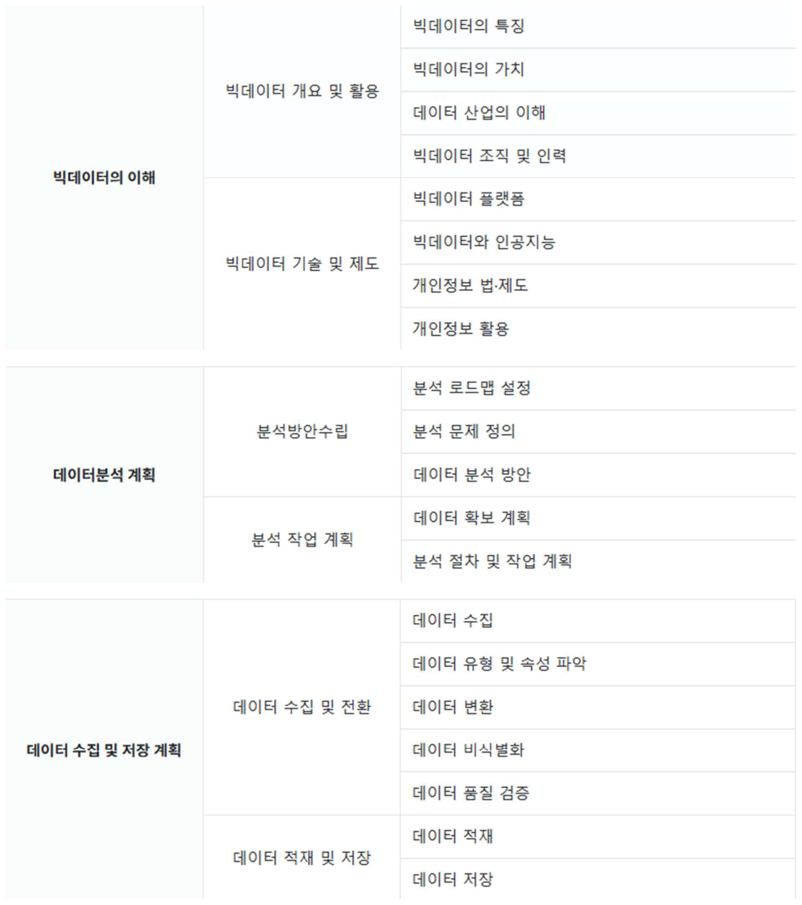
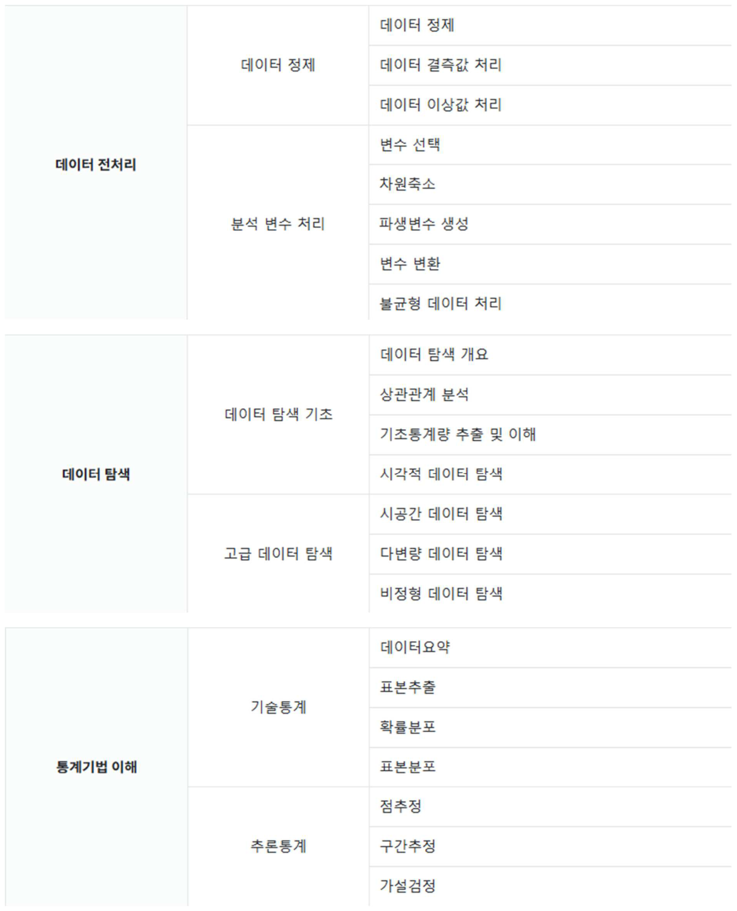
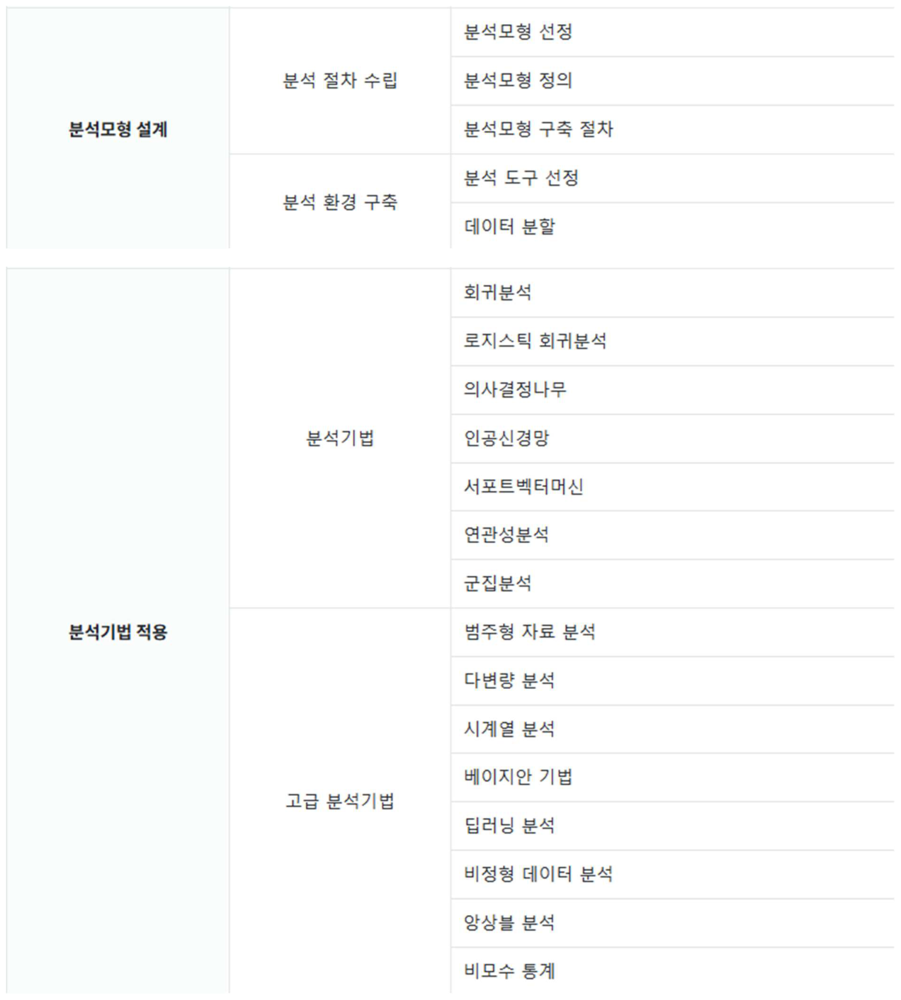
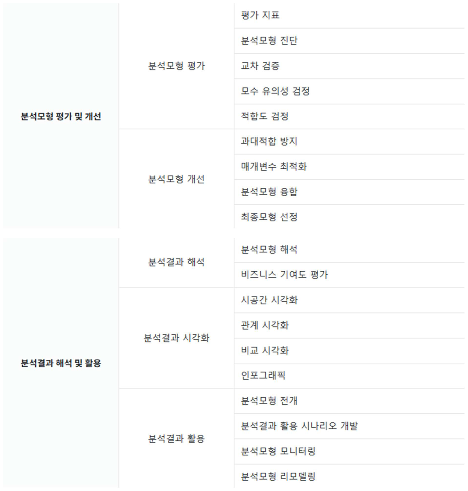

원본: 빅데이터분석기사_요약노트_260805_unlocked.pdf (69쪽) · 개정 2026.08.05
회차마다 4과목 · 각 20문항입니다. 한 회차를 다 풀면 실제 시험과 같은 80문항이 됩니다. 실전 모드(타이머·일괄 채점·과락 판정)와 학습 모드(즉시 해설) 중에 고를 수 있습니다. 맨 오른쪽 실전 은 4과목을 실제 시험처럼 한 번에 푸는 시험지입니다 — 80문항 · 120분 · 합격 판정까지 나옵니다.
| 1과목 빅데이터 분석 기획 | 2과목 빅데이터 탐색 | 3과목 빅데이터 모델링 | 4과목 빅데이터 결과해석 | 실전 4과목 통합 | |
|---|---|---|---|---|---|
| 1회차 기본 | 20문항 | 20문항 | 20문항 | 20문항 | 80문항 · 120분 |
| 2회차 기본 II | 20문항 | 20문항 | 20문항 | 20문항 | 80문항 · 120분 |
| 3회차 계산·응용 | 20문항 | 20문항 | 20문항 | 20문항 | 80문항 · 120분 |
| 4회차 함정·부정형 | 20문항 | 20문항 | 20문항 | 20문항 | 80문항 · 120분 |
| 5회차 고난도 종합 | 20문항 | 20문항 | 20문항 | 20문항 | 80문항 · 120분 |
| 6회차 계산 I | 20문항 | 20문항 | 20문항 | 20문항 | 80문항 · 120분 |
| 7회차 계산 II | 20문항 | 20문항 | 20문항 | 20문항 | 80문항 · 120분 |
| 8회차 계산·함정 | 20문항 | 20문항 | 20문항 | 20문항 | 80문항 · 120분 |
| 9회차 사례·계산 | 20문항 | 20문항 | 20문항 | 20문항 | 80문항 · 120분 |
| 10회차 총정리 | 20문항 | 20문항 | 20문항 | 20문항 | 80문항 · 120분 |
한번에 풀기 — 한 과목의 모든 회차를 회차 구분선을 두고 한 페이지에서 이어 풉니다. 채점은 회차별로 따로 나옵니다.



